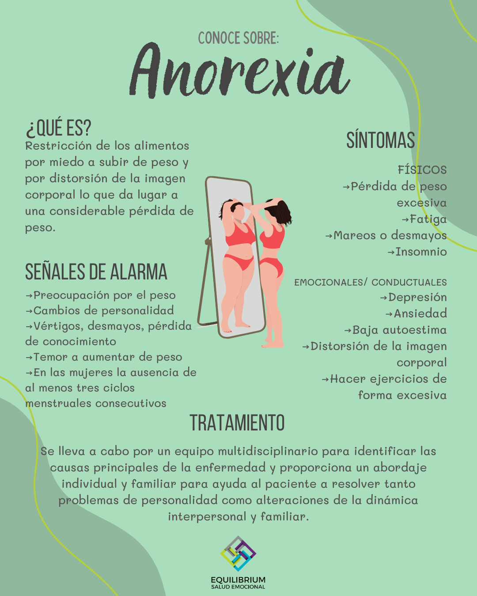

INGLES
GUIA DE TRABAJO – TALLER INTEGRADO
I.E.D.E.M.
ASIGNATURA: INGLES
DOCENTE: RAUL CAÑAS
INSTRUCCIONES GENERALES
1. DESCARGUE EL DOCUMENTO Y CONSERVELO EN FORMATO DE WORD PARA SOLUCIONARLO.
2. LEA ATENTAMENTE LAS INSTRUCCIONES DE CADA UNA DE LAS ACTIVIDADES PARA RESOLVER APROPIADAMENTE.
3. RESUELVA EL TALLER EN ESTE MISMO DOCUMENTO AGREGANDO LAS PAGINAS QUE SEAN NECESARIAS PARA SU SOLUCION.
4. AL TERMINAR DE RESOLVER, PUBLICARLO EN SU PAGINA WEB PARA SU RESPECTIVA
5. FECHA FINAL DE ENTREGA: AGOSTO 4
ACTIVITY 1: LEE Y TRADUCE CADA UNO DE LOS PARRAFOS QUE SE DAN EN LA LECTURA A CONTINUACION.
Eating Disorders
Eating disorders are so common in America that 1 or 2 out every 100 students will struggle with one. The most common types of eating disorder are anorexia nervosa and bulimia nervosa (usually called simply “anorexia” and “bulimia”: But other food-related disorders, like binge eating disorders, body image disorders, and food phobias, are showing up more frequently than they used to.
TRADUCCIÓN:
Los trastornos alimentarios son tan comunes en Estados Unidos que 1 o 2 de cada 100 estudiantes tendrán problemas con uno. Los tipos más comunes de trastornos alimentarios son la anorexia nerviosa y la bulimia nerviosa (generalmente llamados simplemente “anorexia” y “bulimia”; pero otros trastornos relacionados con los alimentos, como los trastornos por atracón, los trastornos de la imagen corporal y las fobias a los alimentos, están apareciendo con mayor frecuencia). de lo que solían hacerlo.
ANOREXIA
People with anorexia have an extreme fear of weight gain and a distorted view of their body size and shape. As a result, they can’t maintain a normal body weight.
Some people with anorexia restrict their food intake by dieting, or excessive exercise. They hardly eat at all – and the small amount of food they do eat becomes an obsession.
Other people with eating disorders do something called binge eating and purging, where they eat a lot of food and then try to get rid of the calories by forcing themselves to vomit, using laxatives, or exercising excessively.
TRADUCCIÓN:
Las personas con anorexia tienen un miedo extremo a ganar peso y una visión distorsionada del tamaño y la forma de su cuerpo. Como resultado, no pueden mantener un peso corporal normal.
Algunas personas con anorexia restringen su ingesta de alimentos mediante dietas o ejercicio excesivo. Casi no comen nada y la pequeña cantidad de comida que comen se convierte en una obsesión.
Otras personas con trastornos alimentarios hacen algo llamado atracones y purgas, donde comen mucha comida y luego intentan deshacerse de las calorías obligándose a vomitar, usando laxantes o haciendo ejercicio excesivo.
BULIMIA
Bulimia is similar to anorexia. With bulimia, a person binge eats (eats far too much food) and then tries to compensate it extreme ways, such as forced vomiting or excessive exercise, to prevent weight gain. Over time, these steps can be dangerous. To be diagnosed with bulimia, a person must be binging and purging regularly, at least twice a week for a couple of months. People with bulimia eat a large amount of food (often junk food) at once, usually in secret. The person typically feels powerless to stop eating and can only stop once he or she is too full to eat any more.
TRADUCCIÓN:
la bulimia es similar a la anorexia. Con la bulimia, una persona come compulsivamente (come demasiada comida) y luego trata de compensarlo de formas extremas, como vómitos forzados o ejercicio excesivo, para evitar el aumento de peso. Con el tiempo, estos pasos pueden resultar peligrosos. Para ser diagnosticado con bulimia, una persona debe tener atracones y purgas con regularidad, al menos dos veces por semana durante un par de meses. Las personas con bulimia comen una gran cantidad de comida (a menudo comida chatarra) a la vez, generalmente en secreto. Por lo general, la persona se siente impotente para dejar de comer y sólo puede hacerlo cuando está demasiado llena para comer más.
ACTIVITY 2: BUSCA UNA IMAGEN QUE PUEDA IDENTIFICAR CADA UNO DE LOS PARRAFOS DE LA LECTURA ANTERIOR Y AGREGALO EN LA SOLUCIÒN DEL TRABAJO PROPUESTO



ACTIVITY 3: RESUELVE EL CUESTIONARIO QUE SE DA A CONTINUACIÓN A PARTIR DE LA LECTURA.
A- Read the text and decide whether these sentences are true (T) or false (F). Correct the false ones.
1. A great number of American students will suffer from eating disorders. __F__
2. Anorexia and bulimia are the only food-related disorders. ___F_
3. Anorexics like their body. __T___
4. Some anorexics eat very little and do too much exercise. ___T___
5. Some bulimics try to lose their calories by exercising regularly. ___T_
B- Answer the following questions with complete sentences.
. What are the symptoms of bulimia?
To be diagnosed with bulimia, a person must binge and purge regularly, at least twice a week for a couple of months
TRADUCCIÓN
Para ser diagnosticado con bulimia, una persona debe tener atracones y purgas con regularidad, al menos dos veces por semana durante un par de meses.
. When can we say that a person suffers from bulimia?
R// a person compulsively eats (eats too much food) and then tries to compensate in extreme ways, such as forced vomiting or excessive exercise, to prevent weight gain
TRADUCCIÓN
una persona come compulsivamente (come demasiada comida) y luego trata de compensarlo de formas extremas, como vómitos forzados o ejercicio excesivo, para evitar el aumento de peso
3. Why do bulimics eat so much?
R// People with bulimia eat a large amount of food (often junk food) at a time, usually in secret. The person usually feels helpless to stop eating and can only do so when they are too full to eat more.
TRADUCCIÓN
Las personas con bulimia comen una gran cantidad de comida (a menudo comida chatarra) a la vez, generalmente en secreto. Por lo general, la persona se siente impotente para dejar de comer y sólo puede hacerlo cuando está demasiado llena para comer más.
ACTIVITY 4: COMPLETA EL SIGUIENTE CUADRO CON LA INFORMACIÒN QUE SE PIDE: ESCRIBE EN CADA CASO TRES SUGERENCIAS APLICANDO LAS EXPRESIONES: SHOULD – SHOULDN’T / HOW ABOUT…? / WHY DON`T YOU…? PARA EXPRESAR LA POSIBLE SOLUCIÒN A CADA UNA DE ESTAS SITUACIONES DE SALUD. UTILIZA VOCABULARIO Y EXPRESIONES ESTUDIADAS Y TRABAJADAS EN CLASE EATING DISORDERS WHY DON`T YOU…? YOU SHOULD… / YOU SHOULDN`T… HOW ABOUT GOING TO…?
>ANOREXIA
Why don´t you talk to a trusted friend?
Why don’t you join a support group?
Why don’t you try to express your feelings?
You should seek professional help
You should eat balanced meals regularly
You should focus on your health, not weight
you shouldn ‘t skip meals
You shouldn’t isolate yourself
You shouldn’t engage in negative self-talk
How about going to a nutritionist?
How about going to a therapist?
How about going to a support group meeting?
BULIMIA
Why don’t you reach out to a counselor?
Why don’t you practice mindfulness?
Why don’t you talk to family members?
You should establish a regular eating schedule
You should drink plenty of water
You should keep a food diary
You shouldn’t purge after eating
You shouldn’t use laxatives
You shouldn’t be hard on yourself
How about going to a psychologist?
How about going to a dietitian?
How about going to a support group meeting?
ACTIVITY 5: ELABORA UNA LISTA DE 12 HABITOS SALUDABLES Y NO SALUDABLES CON SU RESPECTIVA IMAGEN. LUEGO ESCRIBE PARA CADA UNO UNA SUGERENCIA APLICANDO LAS EXPRESIONES: SHOULD – SHOULDN’T / HOW ABOUT…? / WHY DON`T YOU. SIGUE EL EJEMPLO: ACTIVITY 5: ELABORA UNA LISTA DE 12 HABITOS SALUDABLES Y NO SALUDABLES CON SU RESPECTIVA IMAGEN. LUEGO ESCRIBE PARA CADA UNO UNA SUGERENCIA APLICANDO LAS EXPRESIONES: SHOULD – SHOULDN’T / HOW ABOUT…? / WHY DON`T YOU. SIGUE EL EJEMPLO: DRINK WATER SUGERENCIA: ⦁ WE SHOULD DRINK WATER BECAUSE IT IS NECESSARY AND IMPORTANT FOR OUR HEALTH. ⦁ HOW ABOUT DRINKING WATER FOR HAVING A BERTTER HEALTH? ⦁ WHY DON’T YOU DRINK WATER TO HAVE GOOD HEALTH? NOTA: LA LISTA DE ESTOS HABITOS DEBE SER DIFERENTE AL VOCABULARIO TRABAJADO EN CLASe1. eat fruit and vegetables
ACTIVITY 5: ELABORA UNA LISTA DE 12 HABITOS SALUDABLES Y NO SALUDABLES CON SU RESPECTIVA IMAGEN. LUEGO ESCRIBE PARA CADA UNO UNA SUGERENCIA APLICANDO LAS EXPRESIONES: SHOULD – SHOULDN’T / HOW ABOUT…? / WHY DON`T YOU. SIGUE EL EJEMPLO: DRINK WATER SUGERENCIA: ⦁ WE SHOULD DRINK WATER BECAUSE IT IS NECESSARY AND IMPORTANT FOR OUR HEALTH. ⦁ HOW ABOUT DRINKING WATER FOR HAVING A BERTTER HEALTH? ⦁ WHY DON’T YOU DRINK WATER TO HAVE GOOD HEALTH? NOTA: LA LISTA DE ESTOS HABITOS DEBE SER DIFERENTE AL VOCABULARIO TRABAJADO EN CLASeACTIVITY 5: ELABORA UNA LISTA DE 12 HABITOS SALUDABLES Y NO SALUDABLES CON SU RESPECTIVA IMAGEN. LUEGO ESCRIBE PARA CADA UNO UNA SUGERENCIA APLICANDO LAS EXPRESIONES: SHOULD – SHOULDN’T / HOW ABOUT…? / WHY DON`T YOU. SIGUE EL EJEMPLO: DRINK WATER SUGERENCIA: ⦁ WE SHOULD DRINK WATER BECAUSE IT IS NECESSARY AND IMPORTANT FOR OUR HEALTH. ⦁ HOW ABOUT DRINKING WATER FOR HAVING A BERTTER HEALTH? ⦁ WHY DON’T YOU DRINK WATER TO HAVE GOOD HEALTH? NOTA: LA LISTA DE ESTOS HABITOS DEBE SER DIFERENTE AL VOCABULARIO TRABAJADO EN CLASE
1. eat fruit and vegetables
- We should eat fruits and vegetables because they provide essential vitamins and minerals.
- How about eating more fruits and vegetables for better nutrition?
- Why don’t you eat a variety of fruits and vegetables to improve your health?
2.exercise regular
We should exercise regularly to maintain physical fitness.
- How about going for a jog or a walk every day?
- Why don’t you join a gym to stay active?
3.drink enough water
- We should drink water because it is necessary and important for our health.
- How about drinking water for having better health?
- Why don’t you drink water to have good health?
4. Get enough sleep
- We should get enough sleep to allow our bodies to recover.
- How about going to bed earlier to improve your sleep quality?
- Why don’t you establish a regular sleep schedule?
5. Avoid Tobacco
- We shouldn’t smoke because it’s harmful to our lungs.
- How about avoiding smoking to protect your health?
- Why don’t you seek help to quit smoking?

6. Practice Meditation
- We should meditate to reduce stress and increase mindfulness.
- How about trying a short meditation session each morning?
- Why don’t you join a meditation class?
7. Limit Sugar Consumption
- We should limit our sugar intake to prevent health issues like diabetes.
- How about choosing snacks with less sugar?
- Why don’t you read nutrition labels to avoid high-sugar foods?
8. Maintain Good Hygiene
- We should maintain good hygiene to prevent infections.
- How about washing your hands regularly?
- Why don’t you develop a daily hygiene routine?
9. Consume Healthy Fats
- We should consume healthy fats for heart health.
- How about adding avocados or nuts to your diet?
- Why don’t you replace saturated fats with healthier options?
10. Carry out Medical Check-ups
- We should have regular medical check-ups to monitor our health.
- How about scheduling an annual check-up with your doctor?
- Why don’t you keep track of your medical appointments?
11. Avoid Excess Alcohol
- We shouldn’t drink alcohol in excess as it can damage our liver.
- How about limiting your alcohol intake to social occasions?
- Why don’t you seek alternatives to alcoholic beverages?
12. Maintain Healthy Social Relationships
- We should maintain healthy social relationships for emotional support.
- How about spending more time with family and friends?
- Why don’t you join a club or group to meet new people?